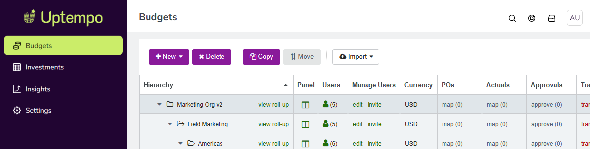
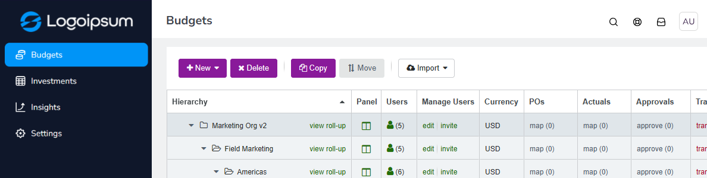
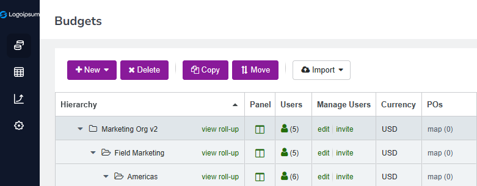
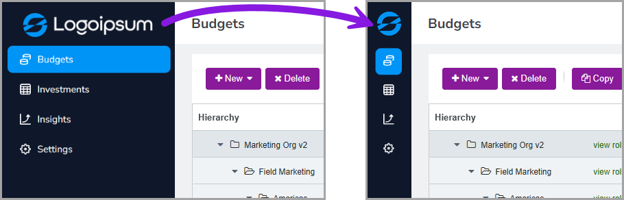
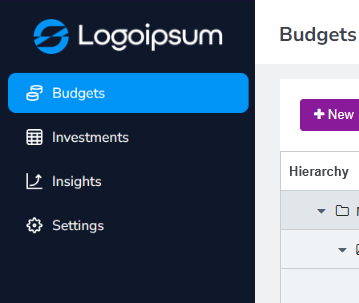
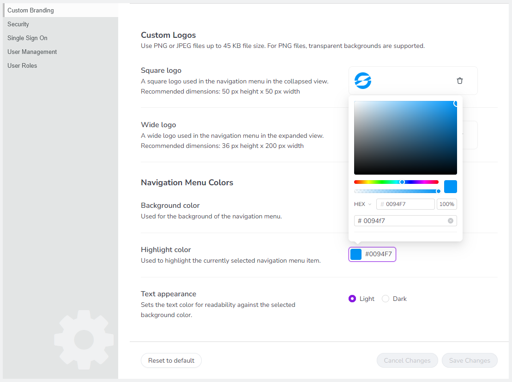

Customize the appearance of your Uptempo navigation menu
If you'd like to align the appearance of your Uptempo instance more closely with your organization's branding, you can customize the navigation menu of the Uptempo user interface. You can:
Add custom logos to display in the navigation menu in place of the Uptempo logo
Use your brand colors in the Uptempo navigation menu instead of the default application colors
Navigation menu with default branding: 
{kind=link}
Custom-branded navigation menu: 
{kind=link}
Configure custom branding settings in Uptempo
Before you begin
This functionality is available in Uptempo 2.0 instances for all packages.
To configure this functionality, you must have administrator access to your Uptempo instance.
Display your logos in Uptempo
You can configure two separate logos to display in the Uptempo navigation menu: a Square logo and a Wide logo.
The reason for this is that the Uptempo navigation menu has two display modes: collapsed and expanded. In the more compact collapsed display mode, the Wide logo may look too small:
{kind=link}

To fix this, you can use the Square logo setting to specify a smaller version of the logo for the collapsed display mode. After you add both types of logo, the Wide logo is used in the expanded full-width mode of the navigation menu, and the Square logo is used in the collapsed mode:
{kind=link}

Configure custom logos in the Uptempo navigation menu
In Uptempo, click
 Settings in the navigation menu. The Organization Settings page opens.
Settings in the navigation menu. The Organization Settings page opens.In the Organization Settings menu, click Custom Branding.
In the section Custom Logos, select the type of logo you want to add:
- Square logo
A "small" logo with 1:1 proportions that's used when the navigation menu is in the collapsed display mode.
- Wide logo
A "full size" logo that's used when the navigation menu is in the expanded display mode.
Click Upload on the type of logo you want to add.
Select the image file of the logo you want to use. The image file should be a JPEG or PNG file (PNG files can have a transparent background) with a file size no larger than 45 KB. Recommended dimensions for each logo type:
Aspect ratio of approximately 1:1 (square)
At least 50 px in both height and width
Aspect ratio of approximately 5:1 (wide rectangle)
At least 36 px height and 200 px width
Click Open to upload the selected image file. The image file is displayed beside the type of logo you selected.
Optional: Repeat steps 3-5 to add the other type of logo.
To apply your settings, click Save Changes.
Your changes take effect immediately, and the navigation menu displays the specified logos.
Use your brand colors in Uptempo
You can configure two brand colors to use in the navigation menu, the Background color and the Highlights color. In addition, you can also set the general shade (light or dark) used for navigation menu item icons and labels, to ensure that they are readable against the Background color you set.

Configure custom colors in the Uptempo navigation menu
In Uptempo, click
Settings in the navigation menu. The Organization Settings page opens.In the Organization Settings menu, click Custom Branding.
In the section Navigation Menu Colors, select the color you want to set and click its color picker:
- Background color
Sets the color used for the background of navigation menu.
- Highlights color
Sets the color used as a highlight around the currently active (selected) navigation menu item.

In the color picker, select the color you want to use:
Use the color spectrum slider to set a hue, then click on a color shade in the field to select it
Enter a HEX, HSB, or RGB value to specify a particular color
Use the opacity slider (or enter a percentage) to change the opacity of the selected color
Click anywhere outside the color picker to close it. The selected color is displayed as a swatch beside the color setting.
Optional: Repeat steps 3-5 to select the other type of color.
To apply your settings, click Save Changes.
{kind=link}
Your changes take effect immediately, and the navigation menu is displayed in the specified colors.